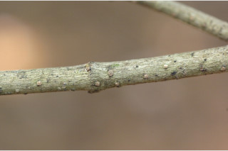
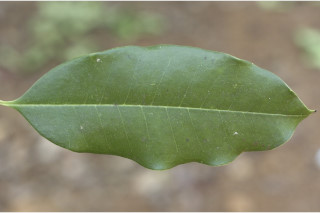
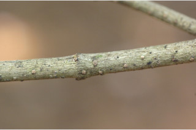
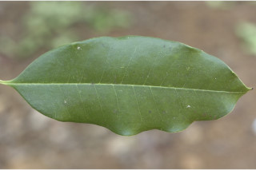
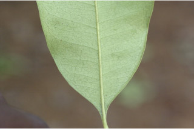
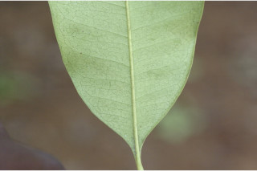

Small trees up to 8 m tall.
8 ಮೀ. ಎತ್ತರದವರೆಗಿನ ಸಣ್ಣ ಮರಗಳು.
Small trees up to 8 m tall.
சிறியமரங்கள் 8 மீ. உயரம் வரை வளரக்கூடியது.
Bark grey, smooth shining, covered with raised corky lenticels; blaze dull orange.
ತೊಗಟೆ ಬೂದು ಬಣ್ಣ ಹೊಂದಿದ್ದು ನಯವಾಗಿರುತ್ತದೆ ಮತ್ತು ಹೊಳಪಾಗಿದ್ದು ಉಬ್ಬಿದ ವಾಯುವಿನಿಮಯ ಬೆಂಡು ರಂಧ್ರಗಳಿಂದ ಆವೃತವಾಗಿರುತ್ತದೆ;ಕಚ್ಚು ಮಾಡಿದ ಜಾಗ ಮಾಸಲು ಕಿತ್ತಳೆ ಬಣ್ಣದಲ್ಲಿರುತ್ತದೆ.
Bark grey, smooth shining, covered with raised corky lenticels; blaze dull orange.
மரத்தின் பட்டை சாம்பல் நிறமானது, வழவழப்பானது, பளபளப்பானது, நன்கு மேல் எழும்பிய பெரிய லெண்டிசெல் உடையது; உள்பட்டை வெளிறிய ஆரஞ்ச் நிறமானது.
Young branchlets subterete, glabrous, whitish.
ಕಿರುಕೊಂಬೆಗಳು ಉಪ-ದುಂಡಾಗಿದ್ದು ರೋಮರಹಿತವಾಗಿರುತ್ತವೆ ಹಾಗೂ ಬಿಳಿ ಬಣ್ಣ ಹೊಂದಿರುತ್ತವೆ.
Young branchlets subterete, glabrous, whitish.
சிறியநுனிக்கிளைகள் குறுக்குவெட்டுத் தோற்றத்தில் வளையமானது, உரோமங்களற்றது, வெள்ளை.
Leaves simple, opposite, decussate; petiole 0.5-1.2 cm long, canaliculate, glabrous; lamina 5-14.5 x 2.5-5 cm, elliptic-obovate, apex abruptly acuminate or sometimes rounded, base cuneate, margin entire or slightly revolute, coriaceous, drying olive green, glabrous beneath; midrib canaliculate above; secondary nerves very slender, nearly parallel; tertiary and higher order nerves obscure.
ಎಲೆಗಳು ಸರಳವಾಗಿದ್ದು ಕತ್ತರಿಯಾಕಾರದ ಅಭಿಮುಖ ಜೋಡನಾ ವ್ಯವಸ್ಥೆಯಲ್ಲಿರುತ್ತವೆ ; ಎಲೆತೊಟ್ಟುಗಳು 0.5 ರಿಂದ 1.2 ಸೆಂ.ಮೀ.ಉದ್ದವಿದ್ದು ,ಕಾಲುವೆ ಗೆರೆಯನ್ನು ಹೊಂದಿದ್ದು ರೋಮರಹಿತವಾಗಿರುತ್ತದೆ; ಪತ್ರಗಳು 5-14.5X 2.5-5 ಸೆಂ.ಮೀ. ಗಾತ್ರ, ಅಂಡವೃತ್ತ-ಬುಗುರಿಯ ಆಕಾರ,ಥಟ್ಟನೆ ಕ್ರಮೇಣ ಚೂಪಾಗುವ ಅಥವಾ ಕೆಲವು ವೇಳೆ ದುಂಡಾದ ತುದಿ, ಬೆಣೆಯಾಕಾರದ ಬುಡ, ನಯವಾದ ಅಥವಾ ತುಸುವಾಗಿ ಹಿಂಸುರುಳಿಯಾದ ಅಂಚು, ತೊಗಲನ್ನೋಲುವ ಮೇಲ್ಮೈ ಹೊಂದಿದ್ದು ಮಬ್ಬು ಹಳದಿ ಛಾಯೆಯುಳ್ಳ ಹಸಿರು ಬಣ್ಣದಲ್ಲಿರುತ್ತವೆ ಹಾಗೂ ತಳಭಾಗದಲ್ಲಿ ರೋಮರಹಿತ -ವಾಗಿರುತ್ತವೆ; ಮಧ್ಯನಾಳ ಮೇಲ್ಭಾಗದಲ್ಲಿ ಕಾಲುವೆಗೆರೆ ಸಮೇತವಿರುತ್ತದೆ; ಎರಡನೇ ದರ್ಜೆಯ ನಾಳಗಳು ತೀರಾ ತೆಳುವಾಗಿರುತ್ತವೆ ಮತ್ತು ಹೆಚ್ಚೂ ಕಡಿಮೆ ಸಮಾಂತರ -ದಲ್ಲಿರುತ್ತವೆ ;ಮೂರನೇ ದರ್ಜೆಯ ಮತ್ತು ಮೇಲ್ದರ್ಜೆಯ ನಾಳಗಳು ಅಸ್ಪಷ್ಟ.
Leaves simple, opposite, decussate; petiole 0.5-1.2 cm long, canaliculate, glabrous; lamina 5-14.5 x 2.5-5 cm, elliptic-obovate, apex abruptly acuminate or sometimes rounded, base cuneate, margin entire or slightly revolute, coriaceous, drying olive green, glabrous beneath; midrib canaliculate above; secondary nerves very slender, nearly parallel; tertiary and higher order nerves obscure.
இலைகள் தனித்தவை, எதிரடுக்கமானவை, குறுக்குமறுக்கானவை; இலைக்காம்பு 0.5-1.2 செ.மீ. நீளமானது, குறுக்குவெட்டுத் தோற்றத்தில் கேனாலிகுலேட், உரோமங்களற்றது; இலை அலகு 5-14.5 X 2.5-5 செ.மீ., நீள்வட்ட-தலைகீழ் முட்டை வடிவானது, அலகின் நுனி சிறிய அதிக்கூரியது அல்லது சிலசமயங்களில் வட்டமானது, அலகின் தளம் ஆப்பு வடிவானது, அலகின் விளிம்பு முழுமையானது அல்லது சிறிது பின்புறம் வளைந்து (ரெவலுட்) காணப்படும், கோரியேசியஸ், உலரும் போது ஆலிவ் பச்சை நிறமானது, உரோமங்களற்றது; மையநரம்பு மேற்புறத்தில் அலகின் பரப்பைவிட பள்ளமானது; இரண்டாம் நிலை நரம்புகள் மெல்லியது, கிட்டதட்ட இணையானவை; மூன்றாம் நிலை நரம்புகள் மற்றும் பிற நரம்புகள் கண்களுக்கு புலப்படாது.
Inflorescence few flowered cymes or on axillary fascicles; slender peduncles; flowers sessile, yellowish white.
ಪುಷ್ಪಮಂಜರಿಗಳು ಕೆಲವು ಹೂಗಳನ್ನೊಳಗೊಂಡ ಮಧ್ಯಾರಂಭಿ ಮಾದರಿಯಲ್ಲಿರುತ್ತವೆ ಅಥವಾ ಅಕ್ಷಾಕಂಕುಳಿನಲ್ಲಿನ ಗುಛ್ಛಗಳ ಮೇಲಿರುತ್ತವೆ;ಪುಷ್ಪಮಂಜರಿ ವೃಂತ ತೆಳುವಾಗಿರುತ್ತವೆ ; ಹೂಗಳು ತೊಟ್ಟುರಹಿತವಾಗಿದ್ದು ಹಳದಿ ಮಿಶ್ರಿತ ಬಿಳಿ ಬಣ್ಣ ಹೊಂದಿರುತ್ತವೆ.
Inflorescence few flowered cymes or on axillary fascicles; slender peduncles; flowers sessile, yellowish white.
மஞ்சரி குறைந்த மலர்களுடைய சைம் வகை அல்லது தொகுப்பாக இலைக்கோணங்களில் காணப்படுபவை; மெல்லியது மஞ்சரிக்காம்பு; மலர்கள் காம்பற்றது, மஞ்சள்- வெள்ளை நிறமானது.
Drupe, ellipsoid, or ovoid, 1.5 cm long; seed one.
ಡ್ರೂಪ್ಗಳು ಅಂಡವೃತ್ತ ಅಥವಾ ಅಂಡಾಕಾರ ಹೊಂದಿದ್ದು 1.5 ಸೆಂ.ಮೀ. ಉದ್ದ ಹೊಂದಿರುತ್ತವೆ; ಬೀಜಗಳ ಸಂಖ್ಯೆ ಒಂದು.
Drupe, ellipsoid, or ovoid, 1.5 cm long; seed one.
உள்ளோட்டுத்தசைகனி (ட்ரூப்), நீள்வட்ட வடிவானது, அல்லது முட்டை வடிவானது, 1.5 செ.மீ. நீளமானது; ஒரு விதையுள்ள கனி.

 




 
